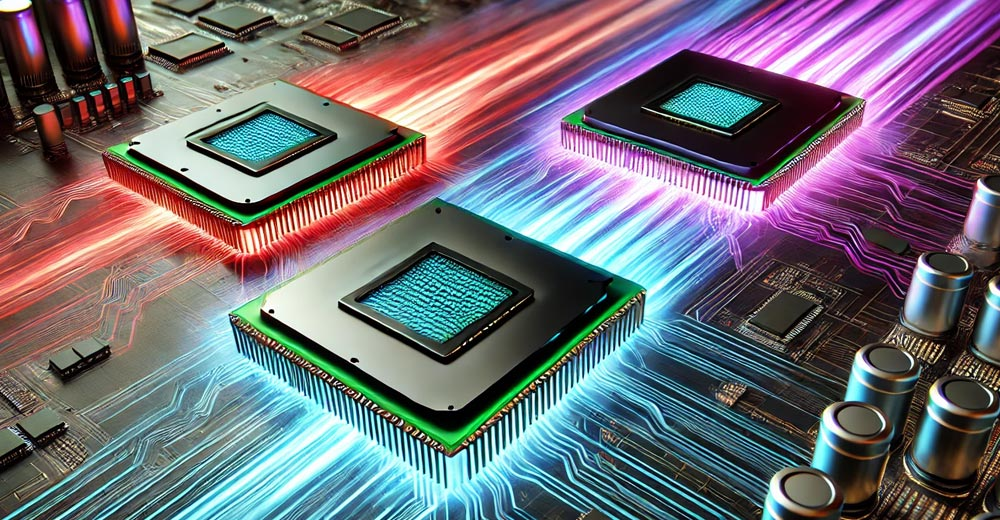
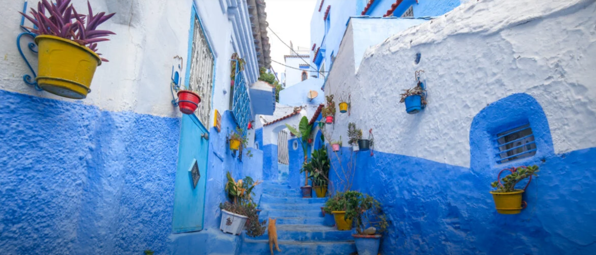
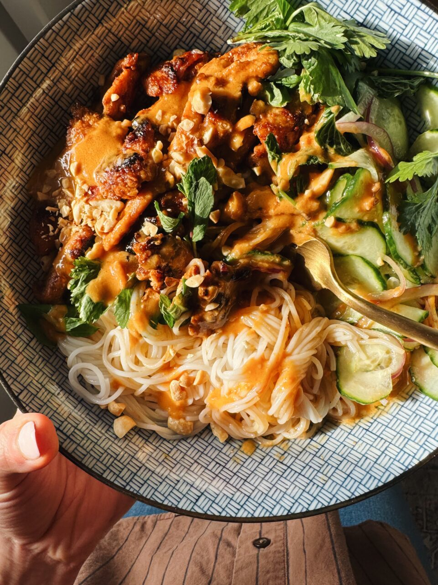

Processor Wars: How Qualcomm Lost Its Early Lead
AMD’s people just put their heads down and executed, and of the three vendors, it ended up doing the best, even suggesting it would buy Intel. Qualcomm was on the list of companies looking to buy Intel, too. However, Intel is both more complex and far larger than either AMD or Qualcomm, making it unlikely that either company would be comfortable making this acquisition.
AMD would be the strongest of the two because it shares both market coverage and x86 technology, meaning it would be better able to step in seamlessly to lead Intel. Still, given how complex Intel is and the cloud it’s under, it seems unlikely either firm will be able to make an Intel acquisition happen.

Chefchaouen Day Trip: The Blue City Of Morocco
The blue city of Chefchaouen is one of Morocco’s most famous sights. This unique little mountain town has entire streets that are painted in shades of blue.
You can go to Chef Chaouen on a day trip from Fes or Tangier, or there are hotels in the city if you want to stay longer. I went there on a day trip from Fes and enjoyed it, even though it took all day to go there and back.
This travel guide will explain how to get to the blue city (with or without a tour), what to see there, and everything else you need to know before you go!

Thai Peanut Chicken Bowls
What you’re looking at is a a bowl of caramelized peanut chicken, on a tangled bed of vermicelli noodles, with some herbs and cucumber salad, topped with more of that peanut sauce.